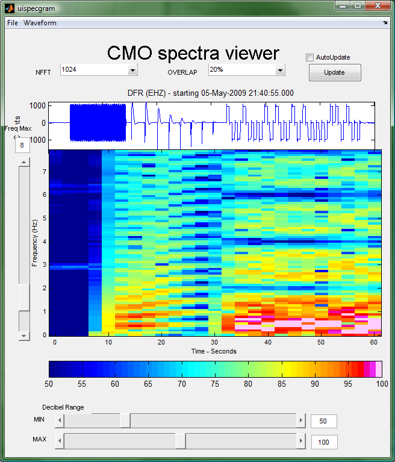

This page links to various examples of the waveform suite in use. To download the associated .m files, right-click and then choose "save Link as...".
Links to the examples
- The SCNLobject cookbook
- uses: scnlobject
The scnlobjects keep track of the "where" of a data set, and are mostly used behind the scenes. However, understanding how they work will make subsetting and aggregating data an easier task. The cookbook is a guide to the functionality built into the scnlobjects that describes how to create, modify, and search scnlobjects.- View the cookbook
- Plotting Sample
- uses: (datasource, scnlobject, waveform, spectralobject, filterobject)
Access waveforms that were stored in .mat files in a directory system, manipulate the data, and then view with plot, specgram, and specgram2 routines.- View the extended example
- Download plotting_sample.m

- Remove Calibration Pulse Sample
- uses: (datasource, scnlobject, waveform, filterobject)
Access waveform from a server, find the calibration pulse through assumptions and filtering, and then remove the associated data from the waveform.- View the extended example
- Download remove_calib_sample.m

- Common Datasource and Scnlobject file
- uses: (datasource, scnlobject)
Store the most commonly accessed datasources and scnlobjects in a separate .m file, so that they can be loaded at startup or whenever I need to get them quickly.- View the extended example
- Download common_datasources_sample.m
- uispecgram example
- uses: (waveform, spectralobject)
A brief tutorial explaining how to use the interactive spectrogram creator that was included with the waveform suite.

Please send feedback to: celso <at> gi <dot> alaska <dot> edu